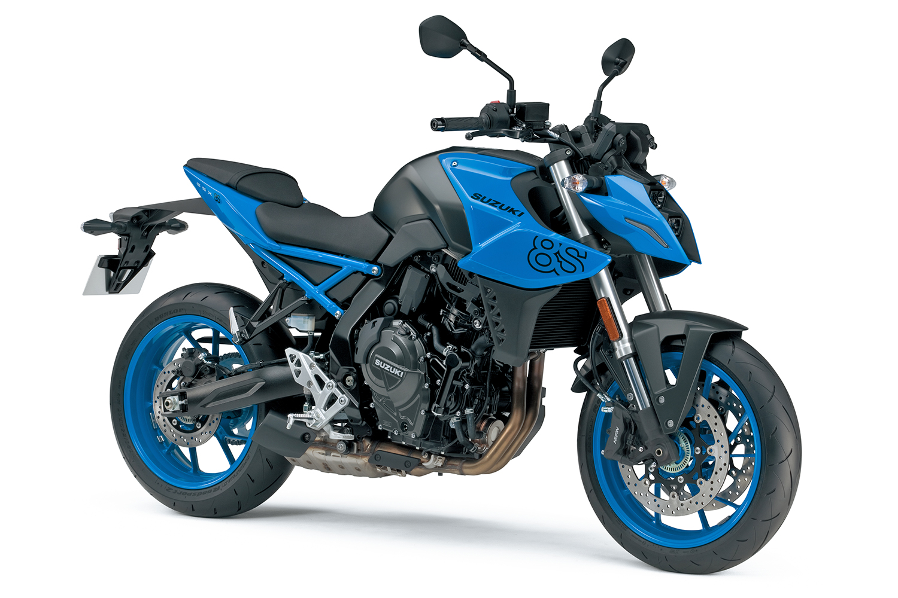

Suzuki GSX-8S vale a pena?

Conheça a Suzuki GSX-8S
A Suzuki GSX-8S é uma moto naked moderna de média cilindrada que combina design agressivo, tecnologia e bom desempenho. Ela foi criada para competir com modelos mais recentes do mercado, oferecendo uma proposta equilibrada entre esportividade e uso diário.
Por isso, muitos motociclistas querem saber se a Suzuki GSX-8S vale a pena. O modelo se destaca pelo visual futurista e pelo conjunto mecânico atualizado.
Com linhas marcantes e iluminação em LED, a GSX-8S chama atenção e entrega uma experiência mais premium dentro da categoria.
Motor e desempenho
A GSX-8S conta com um motor de aproximadamente 800 cilindradas, oferecendo um desempenho forte e consistente.
A velocidade máxima pode ultrapassar os 200 km/h, sendo uma moto voltada para quem busca potência e emoção na pilotagem.
A aceleração é rápida, e o motor responde muito bem tanto em baixa quanto em alta rotação.
Consumo de combustível
Por ser uma moto de maior cilindrada, o consumo da GSX-8S não é tão econômico quanto modelos menores, ficando em torno de 18 km/l a 22 km/l.
Ainda assim, é um valor aceitável para uma moto dessa categoria.
Preço da Suzuki GSX-8S
O preço da Suzuki GSX-8S no Brasil geralmente fica entre R$ 45.000 e R$ 55.000, dependendo da versão e região.
Por ser uma moto mais completa e tecnológica, o valor é mais elevado, mas compatível com o que ela oferece.
No mercado de usadas, os preços podem variar conforme conservação e quilometragem.
Conforto e tecnologia
A GSX-8S oferece uma posição de pilotagem mais ereta em comparação com motos esportivas, tornando o uso diário mais confortável.
Além disso, conta com tecnologias modernas como painel digital, modos de pilotagem e sistemas eletrônicos que ajudam na segurança.
Conclusão: Suzuki GSX-8S vale a pena?
De forma geral, a resposta é que a Suzuki GSX-8S vale a pena para quem busca uma moto potente, moderna e com bom nível de tecnologia.
Ela não é uma moto econômica, mas entrega desempenho e conforto acima da média.
Para quem quer subir de categoria e ter uma experiência mais completa, é uma excelente escolha.